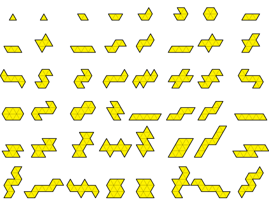

Visualization
It became of essential importance to develop a set of visualization tools to understand the processes and results produced by our software, because human intuition is very good with visual information, but not so much when parsing lists of numeric data. It would have been impossible to check for bugs and errors in the output of a search if we didn't draw them. The illustration and sequence of lists that follow at the end of this section describe the same collection of 48 shapes that came out of a particular search. If the fuse procedure was not working well, perhaps producing a couple of self-overlapping shapes, it would have been impossible to detect this error looking at the raw data, but the visual renderings would have shown this immediately.
We needed a real time connection with a graphics engine that could parse the data generated by Scheme, and show it to us on the fly. For that, we set up a Scheme server and used Processing, a Java based graphics engine developed at the ACG, to write a client that would take the coordinate data, rendering it in a draw loop over time. We designed a simple protocol to translate the coordinate information generated by Scheme into screen pixels. A small video of a search visualization and a few tiling visualizations can be seen here. We also included a collection of process screenshots from the visualization program in the Gallery section.
48 Shapes

... and their 48 descriptions
(0 ((1 1/3 ()) (1 1/3 ()) (1 1/3 ())))
(1 ((1 1/3 ()) (1 1/3 ()) (1 1/3 ())))
(2 ((1 1/3 ()) (1 2/3 ((1 1/3 ()) (1 0 ()) (1 1/3 ()))) (1 1/3 ()) (1 2/3 ())))
(3 ((1 2/3 ((1 1/3 ()) (1 0 ()) (1 1/3 ()))) (1 1/3 ()) (1 1 ((1 2/3 ()) (1 0 ()) (1 1/3 ()))) (1 1/3 ()) (1 2/3 ())))
(4 ((1 2/3 ()) (1 2/3 ((1 1/3 ()) (1 0 ()) (1 1/3 ()))) (1 1/3 ()) (1 4/3 ((1 2/3 ()) (1 0 ()) (1 1/3 ()) (1 0 ()) (1 1/3 ()))) (1 1/3 ()) (1 2/3 ())))
(5 ((1 2/3 ()) (1 2/3 ()) (1 2/3 ((1 1/3 ()) (1 0 ()) (1 1/3 ()))) (1 1/3 ()) (1 5/3 ((1 2/3 ()) (1 0 ()) (1 1/3 ()) (1 0 ()) (1 1/3 ()) (1 0 ()) (1 1/3 ()))) (1 1/3 ()) (1 2/3 ())))
(6 ((1 2/3 ((1 1/3 ()) (1 2/3 ()) (1 0 ()) (1 1/3 ()) (1 0 ()) (1 1/3 ()) (1 0 ()) (1 1/3 ()) (1 0 ()) (1 1/3 ()) (1 1/3 ()))) (1 2/3 ()) (1 2/3 ()) (1 2/3 ()) (1 2/3 ()) (1 2/3 ((1 1/3 ()) (1 0 ()) (1 1/3 ())))))
(7 ((1 2/3 ((1 1/3 ()) (1 0 ()) (1 1/3 ()))) (1 1/3 ()) (1 1 ((1 2/3 ()) (1 0 ()) (1 1/3 ()))) (1 2/3 ((1 1/3 ()) (1 0 ()) (1 1/3 ()))) (1 1/3 ()) (1 1 ())))
(8 ((1 1/3 ()) (1 2/3 ()) (1 1 ((1 1/3 ()) (1 0 ()) (1 1/3 ()) (1 0 ()) (1 1/3 ()))) (1 1/3 ()) (1 2/3 ()) (1 1 ((1 2/3 ()) (1 0 ()) (1 1/3 ())))))
(9 ((1 1/3 ()) (1 1 ((1 2/3 ()) (1 0 ()) (1 1/3 ()))) (1 1/3 ()) (1 4/3 ((1 2/3 ()) (1 0 ()) (1 1/3 ()) (1 0 ()) (1 1/3 ()))) (1 1/3 ()) (1 1 ((1 2/3 ()) (1 0 ()) (1 1/3 ()))) (1 1/3 ()) (1 4/3 ((1 1 ()) (1 0 ()) (1 1/3 ())))))
(10 ((1 1 ((1 2/3 ()) (1 0 ()) (1 1/3 ()))) (1 1/3 ()) (1 2/3 ()) (1 1 ((1 1/3 ()) (1 0 ()) (1 1/3 ()) (1 0 ()) (1 1/3 ()))) (1 1 ((1 2/3 ()) (1 0 ()) (1 1/3 ()))) (1 1/3 ()) (1 2/3 ()) (1 1 ((1 1/3 ()) (1 0 ()) (1 2/3 ())))))
(11 ((1 1/3 ()) (1 2/3 ()) (1 2/3 ((1 1/3 ()) (1 0 ()) (1 1/3 ()))) (1 4/3 ((1 1/3 ()) (1 0 ()) (1 2/3 ()) (1 0 ()) (1 1/3 ()))) (1 1/3 ()) (1 2/3 ()) (1 2/3 ((1 1/3 ()) (1 0 ()) (1 1/3 ()))) (1 4/3 ((1 1 ()) (1 0 ()) (1 1/3 ())))))
(12 ((1 2/3 ()) (1 2/3 ((1 1/3 ()) (1 0 ()) (1 1/3 ()))) (1 1/3 ()) (1 4/3 ((1 2/3 ()) (1 0 ()) (1 1/3 ()) (1 0 ()) (1 1/3 ()))) (1 2/3 ()) (1 2/3 ((1 1/3 ()) (1 0 ()) (1 1/3 ()))) (1 1/3 ()) (1 4/3 ((1 2/3 ()) (1 0 ()) (1 2/3 ())))))
(13 ((1 2/3 ((1 1/3 ()) (1 0 ()) (1 1/3 ()))) (1 1/3 ()) (1 1 ((1 2/3 ()) (1 0 ()) (1 1/3 ()))) (1 1 ((1 1/3 ()) (1 0 ()) (1 2/3 ()))) (1 2/3 ((1 1/3 ()) (1 0 ()) (1 1/3 ()))) (1 1/3 ()) (1 1 ((1 2/3 ()) (1 0 ()) (1 1/3 ()))) (1 1 ())))
(14 ((1 2/3 ((1 1/3 ()) (1 0 ()) (1 1/3 ()))) (1 1/3 ()) (1 4/3 ((1 2/3 ()) (1 0 ()) (1 1/3 ()) (1 0 ()) (1 1/3 ()))) (1 1/3 ()) (1 4/3 ((1 2/3 ()) (1 0 ()) (1 2/3 ()))) (1 2/3 ((1 1/3 ()) (1 0 ()) (1 1/3 ()))) (1 1/3 ()) (1 4/3 ((1 2/3 ()) (1 0 ()) (1 1/3 ()) (1 0 ()) (1 1/3 ()))) (1 1/3 ()) (1 4/3 ())))
(15 ((1 1/3 ()) (1 4/3 ((1 2/3 ()) (1 0 ()) (1 1/3 ()) (1 0 ()) (1 1/3 ()))) (1 1/3 ()) (1 2/3 ()) (1 4/3 ((1 2/3 ()) (1 0 ()) (1 1/3 ()) (1 0 ()) (1 1/3 ()))) (1 1/3 ()) (1 4/3 ((1 2/3 ()) (1 0 ()) (1 1/3 ()) (1 0 ()) (1 1/3 ()))) (1 1/3 ()) (1 2/3 ()) (1 4/3 ((1 1 ()) (1 0 ()) (1 1/3 ())))))
(16 ((1 4/3 ((1 2/3 ()) (1 0 ()) (1 1/3 ()) (1 0 ()) (1 1/3 ()))) (1 1/3 ()) (1 2/3 ()) (1 2/3 ()) (1 1 ((1 1/3 ()) (1 0 ()) (1 1/3 ()) (1 0 ()) (1 1/3 ()))) (1 4/3 ((1 2/3 ()) (1 0 ()) (1 1/3 ()) (1 0 ()) (1 1/3 ()))) (1 1/3 ()) (1 2/3 ()) (1 2/3 ()) (1 1 ((1 1/3 ()) (1 0 ()) (1 2/3 ())))))
(17 ((1 1/3 ()) (1 2/3 ()) (1 2/3 ()) (1 2/3 ((1 1/3 ()) (1 0 ()) (1 1/3 ()))) (1 5/3 ((1 1/3 ()) (1 0 ()) (1 2/3 ()) (1 0 ()) (1 1/3 ()) (1 0 ()) (1 1/3 ()))) (1 1/3 ()) (1 2/3 ()) (1 2/3 ()) (1 2/3 ((1 1/3 ()) (1 0 ()) (1 1/3 ()))) (1 5/3 ((1 1 ()) (1 0 ()) (1 1/3 ()) (1 0 ()) (1 1/3 ())))))
(18 ((1 2/3 ()) (1 2/3 ()) (1 2/3 ((1 1/3 ()) (1 0 ()) (1 1/3 ()))) (1 1/3 ()) (1 5/3 ((1 2/3 ()) (1 0 ()) (1 1/3 ()) (1 0 ()) (1 1/3 ()) (1 0 ()) (1 1/3 ()))) (1 2/3 ()) (1 2/3 ()) (1 2/3 ((1 1/3 ()) (1 0 ()) (1 1/3 ()))) (1 1/3 ()) (1 5/3 ((1 2/3 ()) (1 0 ()) (1 1/3 ()) (1 0 ()) (1 2/3 ())))))
(19 ((1 2/3 ()) (1 2/3 ((1 1/3 ()) (1 0 ()) (1 1/3 ()))) (1 1/3 ()) (1 4/3 ((1 2/3 ()) (1 0 ()) (1 1/3 ()) (1 0 ()) (1 1/3 ()))) (1 1 ((1 1/3 ()) (1 0 ()) (1 2/3 ()))) (1 2/3 ()) (1 2/3 ((1 1/3 ()) (1 0 ()) (1 1/3 ()))) (1 1/3 ()) (1 4/3 ((1 2/3 ()) (1 0 ()) (1 1/3 ()) (1 0 ()) (1 1/3 ()))) (1 1 ())))
(20 ((1 2/3 ()) (1 2/3 ((1 1/3 ()) (1 0 ()) (1 1/3 ()))) (1 1/3 ()) (1 5/3 ((1 2/3 ()) (1 0 ()) (1 1/3 ()) (1 0 ()) (1 1/3 ()) (1 0 ()) (1 1/3 ()))) (1 1/3 ()) (1 4/3 ((1 2/3 ()) (1 0 ()) (1 2/3 ()))) (1 2/3 ()) (1 2/3 ((1 1/3 ()) (1 0 ()) (1 1/3 ()))) (1 1/3 ()) (1 5/3 ((1 2/3 ()) (1 0 ()) (1 1/3 ()) (1 0 ()) (1 1/3 ()) (1 0 ()) (1 1/3 ()))) (1 1/3 ()) (1 4/3 ())))
(21 ((1 2/3 ((1 1/3 ()) (1 0 ()) (1 1/3 ()))) (1 1/3 ()) (1 5/3 ((1 2/3 ()) (1 0 ()) (1 1/3 ()) (1 0 ()) (1 1/3 ()) (1 0 ()) (1 1/3 ()))) (1 1/3 ()) (1 2/3 ()) (1 4/3 ((1 2/3 ()) (1 0 ()) (1 2/3 ()))) (1 2/3 ((1 1/3 ()) (1 0 ()) (1 1/3 ()))) (1 1/3 ()) (1 5/3 ((1 2/3 ()) (1 0 ()) (1 1/3 ()) (1 0 ()) (1 1/3 ()) (1 0 ()) (1 1/3 ()))) (1 1/3 ()) (1 2/3 ()) (1 4/3 ())))
(22 ((1 1/3 ()) (1 5/3 ((1 2/3 ()) (1 0 ()) (1 1/3 ()) (1 0 ()) (1 1/3 ()) (1 0 ()) (1 1/3 ()))) (1 1/3 ()) (1 2/3 ()) (1 2/3 ()) (1 4/3 ((1 2/3 ()) (1 0 ()) (1 1/3 ()) (1 0 ()) (1 1/3 ()))) (1 1/3 ()) (1 5/3 ((1 2/3 ()) (1 0 ()) (1 1/3 ()) (1 0 ()) (1 1/3 ()) (1 0 ()) (1 1/3 ()))) (1 1/3 ()) (1 2/3 ()) (1 2/3 ()) (1 4/3 ((1 1 ()) (1 0 ()) (1 1/3 ())))))
(23 ((1 5/3 ((1 2/3 ()) (1 0 ()) (1 1/3 ()) (1 0 ()) (1 1/3 ()) (1 0 ()) (1 1/3 ()))) (1 1/3 ()) (1 2/3 ()) (1 2/3 ()) (1 2/3 ()) (1 1 ((1 1/3 ()) (1 0 ()) (1 1/3 ()) (1 0 ()) (1 1/3 ()))) (1 5/3 ((1 2/3 ()) (1 0 ()) (1 1/3 ()) (1 0 ()) (1 1/3 ()) (1 0 ()) (1 1/3 ()))) (1 1/3 ()) (1 2/3 ()) (1 2/3 ()) (1 2/3 ()) (1 1 ((1 1/3 ()) (1 0 ()) (1 2/3 ())))))
(24 ((1 1 ((1 1/3 ()) (1 0 ()) (1 1/3 ()) (1 1 ()) (1 0 ()) (1 1/3 ()) (1 0 ()) (1 1/3 ()) (1 0 ()) (1 1/3 ()) (1 1/3 ()))) (1 2/3 ()) (1 2/3 ()) (1 2/3 ()) (1 1 ((1 1/3 ()) (1 0 ()) (1 1/3 ()) (1 1/3 ()) (1 0 ()) (1 2/3 ()) (1 0 ()) (1 1/3 ()) (1 0 ()) (1 1/3 ()) (1 0 ()) (1 1/3 ()) (1 1/3 ()))) (1 2/3 ()) (1 2/3 ()) (1 2/3 ())))
(25 ((1 2/3 ()) (1 2/3 ()) (1 2/3 ((1 1/3 ()) (1 0 ()) (1 1/3 ()))) (1 1/3 ()) (1 5/3 ((1 2/3 ()) (1 0 ()) (1 1/3 ()) (1 0 ()) (1 1/3 ()) (1 0 ()) (1 1/3 ()))) (1 1 ((1 1/3 ()) (1 0 ()) (1 2/3 ()))) (1 2/3 ()) (1 2/3 ()) (1 2/3 ((1 1/3 ()) (1 0 ()) (1 1/3 ()))) (1 1/3 ()) (1 5/3 ((1 2/3 ()) (1 0 ()) (1 1/3 ()) (1 0 ()) (1 1/3 ()) (1 0 ()) (1 1/3 ()))) (1 1 ())))
(26 ((1 2/3 ()) (1 2/3 ()) (1 2/3 ()) (1 2/3 ()) (1 4/3 ((1 1/3 ()) (1 0 ()) (1 1/3 ()) (1 0 ()) (1 1/3 ()) (1 2/3 ()) (1 0 ()) (1 1/3 ()) (1 0 ()) (1 1/3 ()) (1 0 ()) (1 1/3 ()) (1 0 ()) (1 1/3 ()) (1 1/3 ()))) (1 2/3 ()) (1 2/3 ()) (1 2/3 ()) (1 2/3 ()) (1 4/3 ((1 1/3 ()) (1 0 ()) (1 2/3 ()) (1 2/3 ()) (1 0 ()) (1 1/3 ()) (1 0 ()) (1 1/3 ()) (1 0 ()) (1 1/3 ()) (1 0 ()) (1 1/3 ()) (1 1/3 ())))))
(27 ((1 1/3 ()) (1 1 ((1 2/3 ()) (1 0 ()) (1 1/3 ()))) (1 2/3 ((1 1/3 ()) (1 0 ()) (1 1/3 ()))) (1 1/3 ()) (1 5/3 ((1 1 ()) (1 0 ()) (1 1/3 ()) (1 0 ()) (1 1/3 ()))) (1 1/3 ()) (1 1 ((1 2/3 ()) (1 0 ()) (1 1/3 ()))) (1 2/3 ((1 1/3 ()) (1 0 ()) (1 1/3 ()))) (1 1/3 ()) (1 5/3 ((1 4/3 ()) (1 0 ()) (1 1/3 ())))))
(28 ((1 1 ((1 2/3 ()) (1 0 ()) (1 1/3 ()))) (1 2/3 ((1 1/3 ()) (1 0 ()) (1 1/3 ()))) (1 1/3 ()) (1 1 ()) (1 1 ((1 1/3 ()) (1 0 ()) (1 1/3 ()) (1 0 ()) (1 1/3 ()))) (1 1 ((1 2/3 ()) (1 0 ()) (1 1/3 ()))) (1 2/3 ((1 1/3 ()) (1 0 ()) (1 1/3 ()))) (1 1/3 ()) (1 1 ()) (1 1 ((1 1/3 ()) (1 0 ()) (1 2/3 ())))))
(29 ((1 2/3 ((1 1/3 ()) (1 0 ()) (1 1/3 ()))) (1 1/3 ()) (1 1 ()) (1 2/3 ((1 1/3 ()) (1 0 ()) (1 1/3 ()))) (1 4/3 ((1 1/3 ()) (1 0 ()) (1 2/3 ()) (1 0 ()) (1 1/3 ()))) (1 2/3 ((1 1/3 ()) (1 0 ()) (1 1/3 ()))) (1 1/3 ()) (1 1 ()) (1 2/3 ((1 1/3 ()) (1 0 ()) (1 1/3 ()))) (1 4/3 ((1 1 ()) (1 0 ()) (1 1/3 ())))))
(30 ((1 2/3 ()) (1 1 ((1 1/3 ()) (1 0 ()) (1 1/3 ()) (1 0 ()) (1 1/3 ()))) (1 1/3 ()) (1 2/3 ()) (1 4/3 ((1 2/3 ()) (1 0 ()) (1 1/3 ()) (1 0 ()) (1 1/3 ()))) (1 2/3 ()) (1 1 ((1 1/3 ()) (1 0 ()) (1 1/3 ()) (1 0 ()) (1 1/3 ()))) (1 1/3 ()) (1 2/3 ()) (1 4/3 ((1 2/3 ()) (1 0 ()) (1 2/3 ())))))
(31 ((1 1 ((1 1/3 ()) (1 0 ()) (1 1/3 ()) (1 0 ()) (1 1/3 ()))) (1 1/3 ()) (1 2/3 ()) (1 1 ((1 2/3 ()) (1 0 ()) (1 1/3 ()))) (1 1 ((1 1/3 ()) (1 0 ()) (1 2/3 ()))) (1 1 ((1 1/3 ()) (1 0 ()) (1 1/3 ()) (1 0 ()) (1 1/3 ()))) (1 1/3 ()) (1 2/3 ()) (1 1 ((1 2/3 ()) (1 0 ()) (1 1/3 ()))) (1 1 ())))
(32 ((1 1/3 ()) (1 2/3 ()) (1 1 ((1 2/3 ()) (1 0 ()) (1 1/3 ()))) (1 1/3 ()) (1 5/3 ((1 2/3 ()) (1 0 ()) (1 1/3 ()) (1 0 ()) (1 1/3 ()) (1 0 ()) (1 1/3 ()))) (1 1/3 ()) (1 2/3 ()) (1 1 ((1 2/3 ()) (1 0 ()) (1 1/3 ()))) (1 1/3 ()) (1 5/3 ((1 1 ()) (1 0 ()) (1 1/3 ()) (1 0 ()) (1 1/3 ())))))
(33 ((1 1 ((1 2/3 ()) (1 0 ()) (1 1/3 ()))) (1 1/3 ()) (1 4/3 ((1 2/3 ()) (1 0 ()) (1 1/3 ()) (1 0 ()) (1 1/3 ()))) (1 1/3 ()) (1 1 ((1 2/3 ()) (1 0 ()) (1 1/3 ()))) (1 1/3 ()) (1 5/3 ((1 1 ()) (1 0 ()) (1 1/3 ()) (1 0 ()) (1 1/3 ()))) (1 1 ((1 2/3 ()) (1 0 ()) (1 1/3 ()))) (1 1/3 ()) (1 4/3 ((1 2/3 ()) (1 0 ()) (1 1/3 ()) (1 0 ()) (1 1/3 ()))) (1 1/3 ()) (1 1 ((1 2/3 ()) (1 0 ()) (1 1/3 ()))) (1 1/3 ()) (1 5/3 ((1 1 ()) (1 0 ()) (1 2/3 ())))))
(34 ((1 1/3 ()) (1 4/3 ((1 2/3 ()) (1 0 ()) (1 1/3 ()) (1 0 ()) (1 1/3 ()))) (1 1/3 ()) (1 1 ((1 2/3 ()) (1 0 ()) (1 1/3 ()))) (1 1/3 ()) (1 4/3 ((1 1 ()) (1 0 ()) (1 1/3 ()))) (1 4/3 ((1 1/3 ()) (1 0 ()) (1 2/3 ()) (1 0 ()) (1 1/3 ()))) (1 1/3 ()) (1 4/3 ((1 2/3 ()) (1 0 ()) (1 1/3 ()) (1 0 ()) (1 1/3 ()))) (1 1/3 ()) (1 1 ((1 2/3 ()) (1 0 ()) (1 1/3 ()))) (1 1/3 ()) (1 4/3 ((1 1 ()) (1 0 ()) (1 1/3 ()))) (1 4/3 ((1 1 ()) (1 0 ()) (1 1/3 ())))))
(35 ((1 4/3 ((1 2/3 ()) (1 0 ()) (1 1/3 ()) (1 0 ()) (1 1/3 ()))) (1 1/3 ()) (1 1 ((1 2/3 ()) (1 0 ()) (1 1/3 ()))) (1 1/3 ()) (1 4/3 ((1 1 ()) (1 0 ()) (1 1/3 ()))) (1 1/3 ()) (1 4/3 ((1 2/3 ()) (1 0 ()) (1 1/3 ()) (1 0 ()) (1 1/3 ()))) (1 4/3 ((1 2/3 ()) (1 0 ()) (1 1/3 ()) (1 0 ()) (1 1/3 ()))) (1 1/3 ()) (1 1 ((1 2/3 ()) (1 0 ()) (1 1/3 ()))) (1 1/3 ()) (1 4/3 ((1 1 ()) (1 0 ()) (1 1/3 ()))) (1 1/3 ()) (1 4/3 ((1 2/3 ()) (1 0 ()) (1 2/3 ())))))
(36 ((1 1/3 ()) (1 1 ((1 2/3 ()) (1 0 ()) (1 1/3 ()))) (1 1/3 ()) (1 4/3 ((1 1 ()) (1 0 ()) (1 1/3 ()))) (1 1/3 ()) (1 1 ((1 2/3 ()) (1 0 ()) (1 1/3 ()))) (1 5/3 ((1 1/3 ()) (1 0 ()) (1 2/3 ()) (1 0 ()) (1 1/3 ()) (1 0 ()) (1 1/3 ()))) (1 1/3 ()) (1 1 ((1 2/3 ()) (1 0 ()) (1 1/3 ()))) (1 1/3 ()) (1 4/3 ((1 1 ()) (1 0 ()) (1 1/3 ()))) (1 1/3 ()) (1 1 ((1 2/3 ()) (1 0 ()) (1 1/3 ()))) (1 5/3 ((1 1 ()) (1 0 ()) (1 1/3 ()) (1 0 ()) (1 1/3 ())))))
(37 ((1 1 ((1 2/3 ()) (1 1/3 ()) (1 0 ()) (1 4/3 ()) (1 0 ()) (1 1/3 ()) (1 1/3 ()))) (1 2/3 ()) (1 1 ((1 1/3 ()) (1 0 ()) (1 1/3 ()) (1 0 ()) (1 1/3 ()))) (1 1 ((1 2/3 ()) (1 0 ()) (1 1/3 ()))) (1 1/3 ()) (1 1 ((1 2/3 ()) (1 1/3 ()) (1 0 ()) (1 2/3 ()) (1 0 ()) (1 2/3 ()) (1 0 ()) (1 1/3 ()) (1 1/3 ()))) (1 2/3 ()) (1 1 ((1 1/3 ()) (1 0 ()) (1 1/3 ()) (1 0 ()) (1 1/3 ()))) (1 1 ((1 2/3 ()) (1 0 ()) (1 1/3 ()))) (1 1/3 ())))
(38 ((1 2/3 ()) (1 1 ((1 1/3 ()) (1 0 ()) (1 1/3 ()) (1 0 ()) (1 1/3 ()))) (1 1 ((1 2/3 ()) (1 0 ()) (1 1/3 ()))) (1 1/3 ()) (1 2/3 ()) (1 1 ((1 1/3 ()) (1 0 ()) (1 2/3 ()))) (1 4/3 ((1 2/3 ()) (1 0 ()) (1 1/3 ()) (1 0 ()) (1 1/3 ()))) (1 2/3 ()) (1 1 ((1 1/3 ()) (1 0 ()) (1 1/3 ()) (1 0 ()) (1 1/3 ()))) (1 1 ((1 2/3 ()) (1 0 ()) (1 1/3 ()))) (1 1/3 ()) (1 2/3 ()) (1 1 ((1 1/3 ()) (1 0 ()) (1 2/3 ()))) (1 4/3 ((1 2/3 ()) (1 0 ()) (1 2/3 ())))))
(39 ((1 1 ((1 1/3 ()) (1 0 ()) (1 1/3 ()) (1 0 ()) (1 1/3 ()))) (1 1 ((1 2/3 ()) (1 0 ()) (1 1/3 ()))) (1 1/3 ()) (1 2/3 ()) (1 1 ((1 1/3 ()) (1 0 ()) (1 2/3 ()))) (1 1 ((1 2/3 ()) (1 0 ()) (1 1/3 ()))) (1 1 ((1 1/3 ()) (1 0 ()) (1 2/3 ()))) (1 1 ((1 1/3 ()) (1 0 ()) (1 1/3 ()) (1 0 ()) (1 1/3 ()))) (1 1 ((1 2/3 ()) (1 0 ()) (1 1/3 ()))) (1 1/3 ()) (1 2/3 ()) (1 1 ((1 1/3 ()) (1 0 ()) (1 2/3 ()))) (1 1 ((1 2/3 ()) (1 0 ()) (1 1/3 ()))) (1 1 ())))
(40 ((1 1 ((1 2/3 ()) (1 0 ()) (1 1/3 ()))) (1 1/3 ()) (1 2/3 ()) (1 1 ((1 1/3 ()) (1 0 ()) (1 2/3 ()))) (1 1 ((1 2/3 ()) (1 0 ()) (1 1/3 ()))) (1 1/3 ()) (1 5/3 ((1 2/3 ()) (1 0 ()) (1 1/3 ()) (1 0 ()) (1 1/3 ()) (1 0 ()) (1 1/3 ()))) (1 1 ((1 2/3 ()) (1 0 ()) (1 1/3 ()))) (1 1/3 ()) (1 2/3 ()) (1 1 ((1 1/3 ()) (1 0 ()) (1 2/3 ()))) (1 1 ((1 2/3 ()) (1 0 ()) (1 1/3 ()))) (1 1/3 ()) (1 5/3 ((1 1 ()) (1 0 ()) (1 1/3 ()) (1 0 ()) (1 1/3 ())))))
(41 ((1 2/3 ()) (1 2/3 ((1 1/3 ()) (1 0 ()) (1 1/3 ()))) (1 4/3 ((1 1/3 ()) (1 0 ()) (1 2/3 ()) (1 0 ()) (1 1/3 ()))) (1 1/3 ()) (1 2/3 ()) (1 2/3 ((1 1/3 ()) (1 0 ()) (1 1/3 ()))) (1 5/3 ((1 1 ()) (1 0 ()) (1 1/3 ()) (1 0 ()) (1 1/3 ()))) (1 2/3 ()) (1 2/3 ((1 1/3 ()) (1 0 ()) (1 1/3 ()))) (1 4/3 ((1 1/3 ()) (1 0 ()) (1 2/3 ()) (1 0 ()) (1 1/3 ()))) (1 1/3 ()) (1 2/3 ()) (1 2/3 ((1 1/3 ()) (1 0 ()) (1 1/3 ()))) (1 5/3 ((1 1 ()) (1 0 ()) (1 2/3 ())))))
(42 ((1 2/3 ((1 1/3 ()) (1 0 ()) (1 1/3 ()))) (1 4/3 ((1 1/3 ()) (1 0 ()) (1 2/3 ()) (1 0 ()) (1 1/3 ()))) (1 1/3 ()) (1 2/3 ()) (1 2/3 ((1 1/3 ()) (1 0 ()) (1 1/3 ()))) (1 4/3 ((1 1 ()) (1 0 ()) (1 1/3 ()))) (1 1 ((1 1/3 ()) (1 0 ()) (1 2/3 ()))) (1 2/3 ((1 1/3 ()) (1 0 ()) (1 1/3 ()))) (1 4/3 ((1 1/3 ()) (1 0 ()) (1 2/3 ()) (1 0 ()) (1 1/3 ()))) (1 1/3 ()) (1 2/3 ()) (1 2/3 ((1 1/3 ()) (1 0 ()) (1 1/3 ()))) (1 4/3 ((1 1 ()) (1 0 ()) (1 1/3 ()))) (1 1 ())))
(43 ((1 4/3 ((1 1/3 ()) (1 0 ()) (1 2/3 ()) (1 0 ()) (1 1/3 ()))) (1 1/3 ()) (1 2/3 ()) (1 2/3 ((1 1/3 ()) (1 0 ()) (1 1/3 ()))) (1 4/3 ((1 1 ()) (1 0 ()) (1 1/3 ()))) (1 1/3 ()) (1 4/3 ((1 2/3 ()) (1 0 ()) (1 1/3 ()) (1 0 ()) (1 1/3 ()))) (1 4/3 ((1 1/3 ()) (1 0 ()) (1 2/3 ()) (1 0 ()) (1 1/3 ()))) (1 1/3 ()) (1 2/3 ()) (1 2/3 ((1 1/3 ()) (1 0 ()) (1 1/3 ()))) (1 4/3 ((1 1 ()) (1 0 ()) (1 1/3 ()))) (1 1/3 ()) (1 4/3 ((1 1 ()) (1 0 ()) (1 1/3 ())))))
(44 ((1 1 ((1 2/3 ()) (1 1/3 ()) (1 0 ()) (1 2/3 ()) (1 0 ()) (1 2/3 ()) (1 0 ()) (1 1/3 ()) (1 1/3 ()))) (1 2/3 ()) (1 2/3 ((1 1/3 ()) (1 0 ()) (1 1/3 ()))) (1 4/3 ((1 1 ()) (1 0 ()) (1 1/3 ()))) (1 1/3 ()) (1 1 ((1 2/3 ()) (1 1/3 ()) (1 0 ()) (1 1/3 ()) (1 0 ()) (1 1/3 ()) (1 0 ()) (1 2/3 ()) (1 0 ()) (1 1/3 ()) (1 1/3 ()))) (1 2/3 ()) (1 2/3 ((1 1/3 ()) (1 0 ()) (1 1/3 ()))) (1 4/3 ((1 1 ()) (1 0 ()) (1 1/3 ()))) (1 1/3 ())))
(45 ((1 1 ((1 1/3 ()) (1 2/3 ()) (1 0 ()) (1 4/3 ()) (1 1/3 ()) (1 0 ()) (1 1/3 ()))) (1 1/3 ()) (1 4/3 ((1 2/3 ()) (1 0 ()) (1 1/3 ()) (1 0 ()) (1 1/3 ()))) (1 2/3 ()) (1 2/3 ((1 1/3 ()) (1 0 ()) (1 1/3 ()))) (1 1 ((1 1/3 ()) (1 2/3 ()) (1 0 ()) (1 2/3 ()) (1 0 ()) (1 2/3 ()) (1 1/3 ()) (1 0 ()) (1 1/3 ()))) (1 1/3 ()) (1 4/3 ((1 2/3 ()) (1 0 ()) (1 1/3 ()) (1 0 ()) (1 1/3 ()))) (1 2/3 ()) (1 2/3 ((1 1/3 ()) (1 0 ()) (1 1/3 ())))))
(46 ((1 1/3 ()) (1 4/3 ((1 2/3 ()) (1 0 ()) (1 1/3 ()) (1 0 ()) (1 1/3 ()))) (1 2/3 ()) (1 2/3 ((1 1/3 ()) (1 0 ()) (1 1/3 ()))) (1 1/3 ()) (1 4/3 ((1 2/3 ()) (1 0 ()) (1 2/3 ()))) (1 4/3 ((1 2/3 ()) (1 0 ()) (1 1/3 ()) (1 0 ()) (1 1/3 ()))) (1 1/3 ()) (1 4/3 ((1 2/3 ()) (1 0 ()) (1 1/3 ()) (1 0 ()) (1 1/3 ()))) (1 2/3 ()) (1 2/3 ((1 1/3 ()) (1 0 ()) (1 1/3 ()))) (1 1/3 ()) (1 4/3 ((1 2/3 ()) (1 0 ()) (1 2/3 ()))) (1 4/3 ((1 1 ()) (1 0 ()) (1 1/3 ())))))
(47 ((1 4/3 ((1 2/3 ()) (1 0 ()) (1 1/3 ()) (1 0 ()) (1 1/3 ()))) (1 2/3 ()) (1 2/3 ((1 1/3 ()) (1 0 ()) (1 1/3 ()))) (1 1/3 ()) (1 4/3 ((1 2/3 ()) (1 0 ()) (1 2/3 ()))) (1 2/3 ()) (1 1 ((1 1/3 ()) (1 0 ()) (1 1/3 ()) (1 0 ()) (1 1/3 ()))) (1 4/3 ((1 2/3 ()) (1 0 ()) (1 1/3 ()) (1 0 ()) (1 1/3 ()))) (1 2/3 ()) (1 2/3 ((1 1/3 ()) (1 0 ()) (1 1/3 ()))) (1 1/3 ()) (1 4/3 ((1 2/3 ()) (1 0 ()) (1 2/3 ()))) (1 2/3 ()) (1 1 ((1 1/3 ()) (1 0 ()) (1 2/3 ())))))